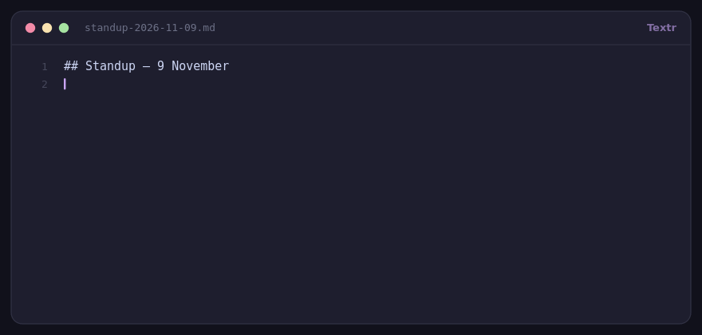

A TextExpander alternative you buy once
TextExpander bills per user, per year, and keeps your snippets in its cloud. Textr is $15 one time, lives in your tray, and stores everything in plain JSON files you can back up, diff and read.
$15 covers all three binaries (Linux, Windows, macOS) plus a starter pack. Or build it free from source — it's MIT licensed.

The difference, plainly
| TextExpander | Textr | |
|---|---|---|
| Pricing model | Subscription, per user, billed yearly | $15 once (or free from source) |
| Where snippets live | Their cloud account | Local JSON files on your machine |
| Works offline | Depends on sync state | Always — there is no server |
| Platforms | macOS, Windows, iOS, web | Linux, Windows 10+, macOS 11+ |
| Team sharing | Built in | Not supported |
| Open source | No | MIT, auditable |
No competitor price is quoted here on purpose — subscription pricing changes. Check their site for the current number and compare it with a single $15 payment.
What you get for the $15
- Four snippet types: static text, per-language code templates, actions, and shell commands whose stdout is inserted.
- Real placeholders:
{date+7},{time},{clipboard},{cursor},{choice:Formal|Friendly},{counter},{random:heads|tails}, and custom values like{company}. - Prefix-aware triggers: with
:dand:dtboth defined, expansion waits one keystroke so the longer trigger wins. - Portable data: export a set of snippets as a pack file, import it elsewhere, and your history and usage counts travel with the JSON.
- Local usage stats — expansions today, last 30 days, and a daily chart. No account required.
What Textr doesn't do
- No team sharing or admin console. If you need to push a shared snippet library to a dozen people, a subscription product is the right tool.
- No mobile apps. Desktop only — there's no iOS counterpart to type from your phone.
- No cloud sync between machines. Copy the JSON files, or keep them in a synced folder yourself.
- Binaries are unsigned, so macOS Gatekeeper and Windows SmartScreen ask once before the first launch.